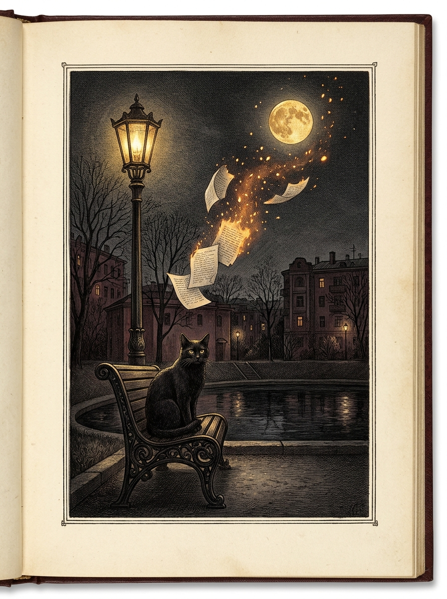

Содержание романа
Оглавление (33 глав)
Часть первая
- Глава IНикогда не разговаривайте с неизвестнымиМосква · Патриаршие пруды
- Глава IIПонтий ПилатЕршалаим · Дворец Ирода
- Глава IIIСедьмое доказательствоМосква · Патриаршие пруды и Бронная
- Глава IVПогоняМосква · Патриарший переулок — Москва-река
- Глава VБыло дело в ГрибоедовеМосква · Тверской бульвар, Дом Грибоедова
- Глава VIШизофрения, как и было сказаноПодмосковье · Клиника Стравинского
- Глава VIIНехорошая квартираМосква · Большая Садовая, д. 302-бис, кв. 50
- Глава VIIIПоединок между профессором и поэтомПодмосковье · Клиника Стравинского
- Глава IXКоровьевские штукиМосква · Большая Садовая, д. 302-бис
- Глава XВести из ЯлтыМосква · Театр Варьете
- Глава XIРаздвоение ИванаПодмосковье · Клиника Стравинского
- Глава XIIЧерная магия и ее разоблачениеМосква · Зрительный зал Варьете
- Глава XIIIЯвление герояПодмосковье · Клиника Стравинского, палата № 117
- Глава XIVСлава петуху!Москва · Театр Варьете
- Глава XVСон Никанора ИвановичаМосква · Клиника Стравинского
- Глава XVIКазньЕршалаим · Лысая Гора
- Глава XVIIБеспокойный деньМосква · Ваганьковский переулок
- Глава XVIIIНеудачливые визитерыМосква · Большая Садовая, кв. 50
Часть вторая и Эпилог
- Глава XIXМаргаритаМосква · Особняк на Остоженке и Александровский сад
- Глава XXКрем АзазеллоМосква · Особняк Маргариты
- Глава XXIПолетМосква и Подмосковье · Ночное небо
- Глава XXIIПри свечахМосква · Пятое измерение квартиры № 50
- Глава XXIIIВеликий бал у сатаныМосква · Залы Великого бала
- Глава XXIVИзвлечение мастераМосква · Квартира № 50
- Глава XXVКак прокуратор пытался спасти Иуду из КириафаЕршалаим · Балкон дворца Ирода
- Глава XXVIПогребениеЕршалаим · Гефсимания и дворец
- Глава XXVIIКонец квартиры № 50Москва · Большая Садовая, д. 302-бис
- Глава XXVIIIПоследние похождения Коровьева и БегемотаМосква · Смоленский рынок и Тверской бульвар
- Глава XXIXСудьба мастера и Маргариты определенаМосква · Крыша дома Пашкова
- Глава XXXПора! Пора!Москва · Полуподвал у Арбата
- Глава XXXIНа Воробьевых горахМосква · Воробьевы горы
- Глава XXXIIПрощение и вечный приютВечность · Лунный путь
- ЭпилогЭпилогМосква · Институт истории и Патриаршие пруды